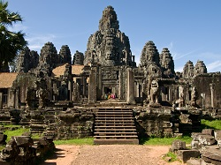
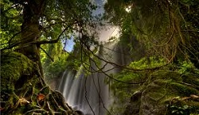
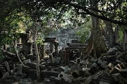

My name is Johny, and I am a
licensed Tour Guide for Angkor Wat.

I have been a licensed tour guide for Angkor Wat since 2011, and give
individual and group tours to Angkor Wat and all related sightings in
the greater Siem Reap area.
I give individual and group tours, and we can customize a tour tailored
specifically to your needs. Take a look below at some tour packages to
get an idea of what I can offer you.
Angkor Wat

$35 USD.
Pick up at 8am. I provide you with a tour of the great Angkor Wat temples, in which you see all the special parts of the temple. After finishing the Angkor circuit, we can optionally visit the Bayon Temple, the Ta Prohm Temple or the Bakong Temple.
The tour will finish around 12pm, after which we can either continue with another tour or I will bring you back to Siem Reap.
I can arrange a pickup by car for an extra $35 USD, which includes (soft) drinks for everybody.
Phnom Kulen National Park

$40 USD.
Pick up at 8am. The drive will take around 2 hours, after which I will take you on a 2 - 4 hour tour around the beautiful mountain.
In the first part of the tour we will visit the famous waterfall and the spring water. This provides for an excellent moment of cooling down on a sunny day and enjoying the water (if the weather allows).
After that, we will walk away from the waterfall and I will show you the linga under the river bank, where you can see ancient carvings.
We will visit the statue of the reclining Buddha in the Wat Preah Ang Thom temple, followed by a trekking tour in the forest to see local people that live in the forests.
The tour will finish around 2pm. I can arrange a pickup by car for an extra $70 USD, which includes (soft) drinks for everybody.
Beng Mealea

$40 USD.
Pick you up at 8am. Beng Mealea is a quite place where not many tourists go. It is a temple built in the Angkor Wat period, was the center of a town, and ranks among one of the biggest temples of the Khmer Empire.
After Beng Mealea we can visit a floating village at Kompong Khleang, which is one of the largest settlements on the Tunle Sap lake with more than 20,000 people living there. You will experience the local village live, which is something not many tourists get to see.
The tour will take 3hour, and the drive will take around 3 hours. I can arrang a pickup by car for an extra $60 USD, which includes (soft) drinks for everybody.